这个是工作中遇见的一个app，需要分析一下app对于应用列表检测感知这个问题
对应的样本的网址：https://github.com/TMLP-Team/TMLP-Detectors-and-Bypassers/blob/main/Detectors/%E5%87%8C%E5%8D%BF%E6%A3%80%E6%B5%8B_v1.6_fix.apk
直接拖进jeb看一下
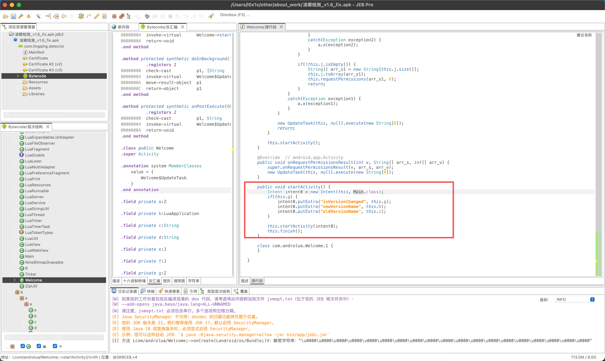
调用lua，看一下lingqing.bin
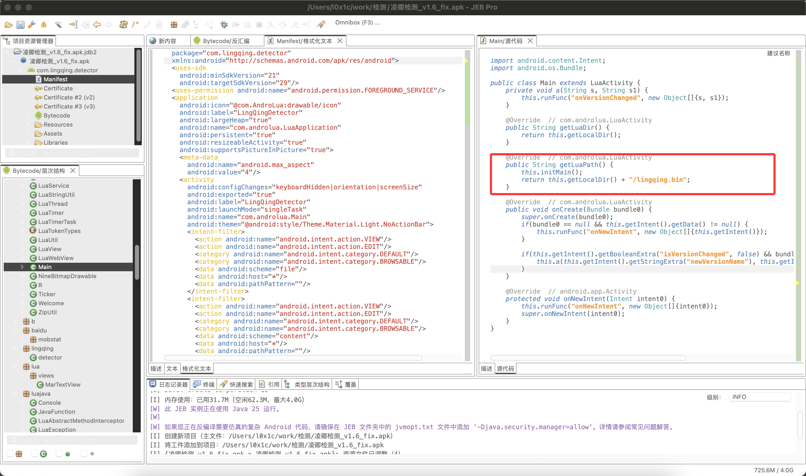
Lua 介绍
C 语言和 Lua 的交互是通过 lua_State来实现的，所以首先需要创建一个 lua_State
把 Lua 脚本加载进 Lua 虚拟机， Lua 提供了三个常用的函数
LUALIB_API int (luaL_loadfilex) (lua_State *L, const char *filename,
const char *mode);
#define luaL_loadfile(L,f) luaL_loadfilex(L,f,NULL)
LUALIB_API int (luaL_loadbufferx) (lua_State *L, const char *buff, size_t sz,
const char *name, const char *mode);
LUALIB_API int (luaL_loadstring) (lua_State *L, const char *s);
这三个函数最后走的都是 lua_load 函数，把经过编译后的代码放到了栈顶，执行加载到栈顶的 Lua 代码，上面的函数只是将程序加载到了栈顶，执行了之后才能变成虚拟机中的函数或者变量，因为在栈顶也没有需要传入的参数，所以只需要调用 lua_pcall 即可
LUA_API int lua_pcallk (lua_State *L, int nargs, int nresults, int errfunc,
lua_KContext ctx, lua_KFunction k)
上面的常用的函数有对应的执行合并参数
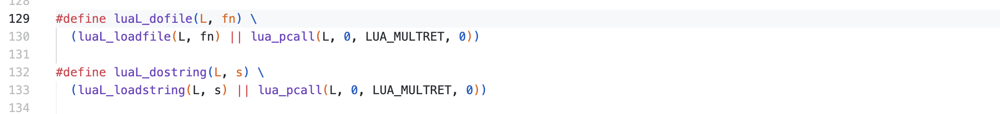
lua 加载执行流程
luaL_loadbufferx来直接看
LUALIB_API int luaL_loadbufferx (lua_State *L, const char *buff, size_t size,
const char *name, const char *mode) {
LoadS ls;
ls.s = buff;
ls.size = size;
return lua_load(L, getS, &ls, name, mode);
}
调用lua_load
LUA_API int lua_load (lua_State *L, lua_Reader reader, void *data,
const char *chunkname, const char *mode) {
ZIO z;
int status;
lua_lock(L);
if (!chunkname) chunkname = "?";
luaZ_init(L, &z, reader, data);
status = luaD_protectedparser(L, &z, chunkname, mode);
if (status == LUA_OK) { /* no errors? */
LClosure *f = clLvalue(L->top - 1); /* get newly created function */
if (f->nupvalues >= 1) { /* does it have an upvalue? */
/* get global table from registry */
Table *reg = hvalue(&G(L)->l_registry);
const TValue *gt = luaH_getint(reg, LUA_RIDX_GLOBALS);
/* set global table as 1st upvalue of 'f' (may be LUA_ENV) */
setobj(L, f->upvals[0]->v, gt);
luaC_upvalbarrier(L, f->upvals[0]);
}
}
lua_unlock(L);
return status;
}
luaD_protectedparser
int luaD_protectedparser (lua_State *L, ZIO *z, const char *name,
const char *mode) {
struct SParser p;
int status;
L->nny++; /* cannot yield during parsing */
p.z = z; p.name = name; p.mode = mode;
p.dyd.actvar.arr = NULL; p.dyd.actvar.size = 0;
p.dyd.gt.arr = NULL; p.dyd.gt.size = 0;
p.dyd.label.arr = NULL; p.dyd.label.size = 0;
luaZ_initbuffer(L, &p.buff);
status = luaD_pcall(L, f_parser, &p, savestack(L, L->top), L->errfunc);
luaZ_freebuffer(L, &p.buff);
luaM_freearray(L, p.dyd.actvar.arr, p.dyd.actvar.size);
luaM_freearray(L, p.dyd.gt.arr, p.dyd.gt.size);
luaM_freearray(L, p.dyd.label.arr, p.dyd.label.size);
L->nny--;
return status;
}
f_parser
static void f_parser (lua_State *L, void *ud) {
LClosure *cl;
struct SParser *p = cast(struct SParser *, ud);
int c = zgetc(p->z); /* read first character */
if (c == LUA_SIGNATURE[0]) {
checkmode(L, p->mode, "binary");
cl = luaU_undump(L, p->z, p->name);
}
else {
checkmode(L, p->mode, "text");
cl = luaY_parser(L, p->z, &p->buff, &p->dyd, p->name, c);
}
lua_assert(cl->nupvalues == cl->p->sizeupvalues);
luaF_initupvals(L, cl);
}
luaU_undump 或者luaY_parser，一个是luac的二进制文件，一个是luac的脚本文件
思路和流程
因为有很多魔改对于文件的结构上的那些调整，可以在load完成之后，执行之前的时候，因为这个时候程序在栈顶的时候，调用标准的lua_dump函数，就可以获得luac文件了
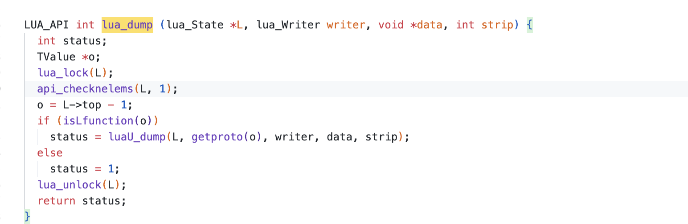
typedef int (*lua_Writer) (lua_State *L, const void *p, size_t sz, void *ud);
当前的文件是lua 5.3.3版本：
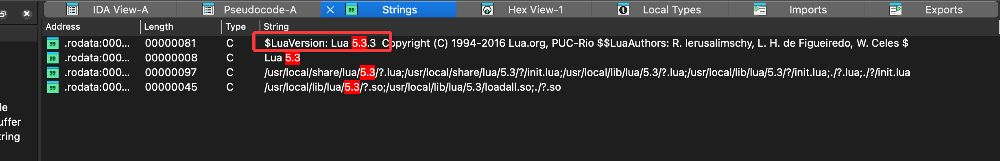
直接ida看一下luaL_loadbufferx，这个的luaL_loadbufferx和源码中的是不一样的所以如果frida hook的话，是要在leave的时候
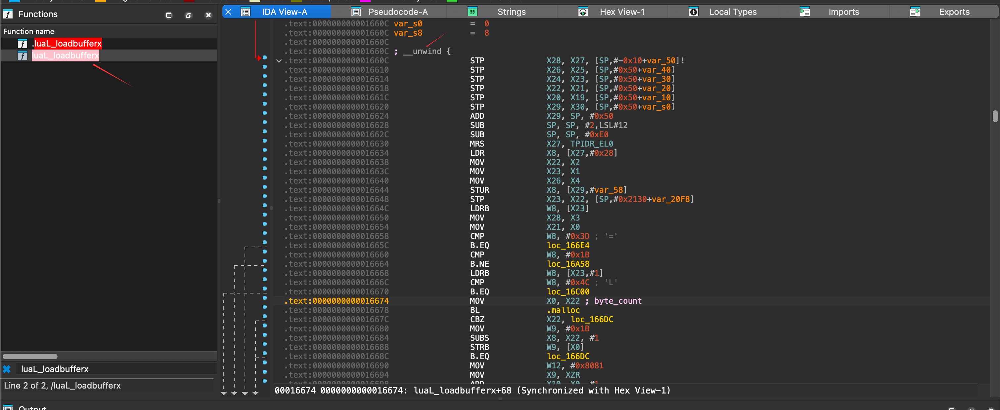
看这个反编译中带有lua_dump的函数，所以可以直接调用，脚本：
var lq_lua = Process.findModuleByName("liblqd_lua.so");
var count = 0;
var fopen = Process.findModuleByName("libc.so").findExportByName("fopen");
var fwrite = Process.findModuleByName("libc.so").findExportByName("fwrite");
var fopen_func = new NativeFunction(fopen, 'pointer', ['pointer', 'pointer']);
var fwrite_func = new NativeFunction(fwrite, 'size_t', ['pointer', 'size_t', 'size_t', 'pointer']);
var targetAddr = lq_lua.base.add(0x1660C);
var lua_dump_ptr = lq_lua.base.add(0x13E14);
var lua_dump = new NativeFunction(lua_dump_ptr, 'int', ['pointer', 'pointer', 'pointer', 'int']);
var currentFile = null;
var writer_cb = new NativeCallback(function (L, p, sz, ud) {
try {
const n = Number(sz);
if (n === 0) return 0;
const wrote = fwrite_func(p, n, 1, ud);
return (Number(wrote) === 1) ? 0 : 1;
} catch (e) {
//expected a pointer
console.log("writer_cb exception: " + e);
return 1;
}
}, 'int', ['pointer', 'pointer', 'size_t', 'pointer']);
console.log("lq_luaV_gettable @ " + targetAddr +
" insn=" + Instruction.parse(targetAddr).toString());
console.log("lua_dump @ " + lua_dump_ptr);
Interceptor.attach(targetAddr, {
onEnter: (args) => {
count += 1;
this.fname = "/data/data/com.lingqing.detector/files/dump/dump.luac" + count;
this.L = args[0];
},
onLeave: (retval) => {
console.log("lq_luaV_gettable called " + count + " times");
try {
currentFile = new File(this.fname, "wb");
} catch (e) {
console.log("Failed to open file " + this.fname + ": " + e);
currentFile = null;
}
var cName = Memory.allocUtf8String(this.fname);
var cMode = Memory.allocUtf8String("wb");
var file = fopen_func(cName, cMode);
if (currentFile) {
try {
//fwrite_func
var status = lua_dump(this.L, writer_cb, file, 0);
console.log("lua_dump status=" + status);
} catch (e2) {
console.log("lua_dump exception: " + e2);
}
try { currentFile.flush(); currentFile.close(); } catch (e3) {}
}
currentFile = null;
}
});
可以抓到这6个luac，但是这么抓的还是会有加密的，说明需要调用原版本的lua的lua_dump，自己编译一个调用lua_dump
var lq_lua = Process.findModuleByName("liblqd_lua.so");
var liblua = Module.load("/data/data/com.lingqing.detector/files/liblua_share.so");
var pdump = liblua.findExportByName("lua_dump");
var fun_dump = new NativeFunction(pdump, "int", ["pointer", "pointer", "pointer", "int"]);
var count = 0;
var fopen = Process.findModuleByName("libc.so").findExportByName("fopen");
var fwrite = Process.findModuleByName("libc.so").findExportByName("fwrite");
var fopen_func = new NativeFunction(fopen, 'pointer', ['pointer', 'pointer']);
var fwrite_func = new NativeFunction(fwrite, 'size_t', ['pointer', 'size_t', 'size_t', 'pointer']);
var targetAddr = lq_lua.base.add(0x1660C);
var lua_dump_ptr = lq_lua.base.add(0x13E14);
var lua_dump = new NativeFunction(lua_dump_ptr, 'int', ['pointer', 'pointer', 'pointer', 'int']);
var currentFile = null;
var writer_cb = new NativeCallback(function (L, p, sz, ud) {
try {
const n = Number(sz);
if (n === 0) return 0;
const wrote = fwrite_func(p, n, 1, ud);
return (Number(wrote) === 1) ? 0 : 1;
} catch (e) {
//expected a pointer
console.log("writer_cb exception: " + e);
return 1;
}
}, 'int', ['pointer', 'pointer', 'size_t', 'pointer']);
console.log("lq_luaV_gettable @ " + targetAddr +
" insn=" + Instruction.parse(targetAddr).toString());
console.log("lua_dump @ " + lua_dump_ptr);
Interceptor.attach(targetAddr, {
onEnter: (args) => {
count += 1;
this.fname = "/data/data/com.lingqing.detector/files/dump/dump.luac" + count;
this.L = args[0];
},
onLeave: (retval) => {
console.log("lq_luaV_gettable called " + count + " times");
try {
currentFile = new File(this.fname, "wb");
} catch (e) {
console.log("Failed to open file " + this.fname + ": " + e);
currentFile = null;
}
var cName = Memory.allocUtf8String(this.fname);
var cMode = Memory.allocUtf8String("wb");
var file = fopen_func(cName, cMode);
if (currentFile) {
try {
//fwrite_func
var status = fun_dump(this.L, writer_cb, ptr(file), 0);
console.log("lua_dump status=" + status);
} catch (e2) {
console.log("lua_dump exception: " + e2);
}
try { currentFile.flush(); currentFile.close(); } catch (e3) {}
}
currentFile = null;
}
});
这次就可以进行反编译了
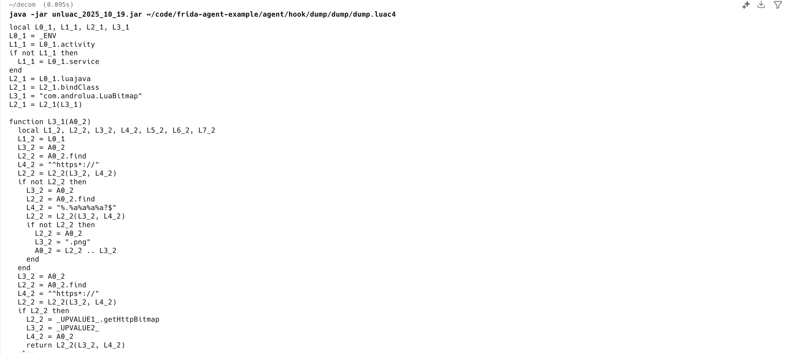
但是a1和a6并不能反编译出来，这里可能有点问题，回看这个样本自带的关于lua的so，在lua_load里进行逆向可以发现
因为按照之前看源码的流程，首先定位到luaD_protectedparser

进来后定位到f_parser
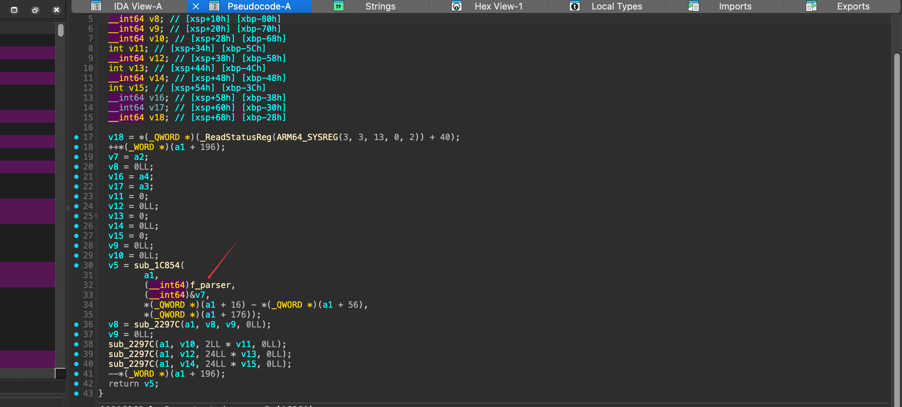
再定位到luaU_undump，但是这个里面还有一个luaU_undump在0x1a,0x1c两个case的是魔改的undump在sub_32D38的位置上

进入sub_32d38中找到LoadFunction，可以看到loadstring是魔改的
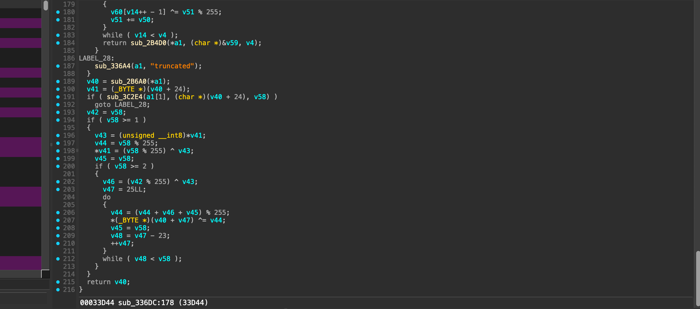
直接打开unluac源码的LStringType，添加解密代码逻辑
package unluac.parse;
import java.io.IOException;
import java.io.OutputStream;
import java.nio.ByteBuffer;
import java.nio.charset.StandardCharsets;
import unluac.Version;
public abstract class LStringType extends BObjectType<LString> {
public static LStringType get(Version.StringType type) {
switch (type) {
case LUA50:
return new LStringType50();
case LUA53:
return new LStringType53();
case LUA54:
return new LStringType54();
default:
throw new IllegalStateException();
}
}
protected ThreadLocal<StringBuilder> b = new ThreadLocal<StringBuilder>() {
@Override
protected StringBuilder initialValue() {
return new StringBuilder();
}
};
}
class LStringType50 extends LStringType {
@Override
public LString parse(final ByteBuffer buffer, BHeader header) {
BInteger sizeT = header.sizeT.parse(buffer, header);
final StringBuilder b = this.b.get();
b.setLength(0);
sizeT.iterate(new Runnable() {
@Override
public void run() {
b.append((char) (0xFF & buffer.get()));
}
});
if (b.length() == 0) {
return LString.NULL;
} else {
char last = b.charAt(b.length() - 1);
b.delete(b.length() - 1, b.length());
String s = b.toString();
if (header.debug) {
System.out.println("-- parsed <string> \"" + s + "\"");
}
return new LString(s, last);
}
}
@Override
public void write(OutputStream out, BHeader header, LString string) throws IOException {
int len = string.value.length();
if (string == LString.NULL) {
header.sizeT.write(out, header, header.sizeT.create(0));
} else {
header.sizeT.write(out, header, header.sizeT.create(len + 1));
for (int i = 0; i < len; i++) {
out.write(string.value.charAt(i));
}
out.write(0);
}
}
}
class LStringType53 extends LStringType {
@Override
public LString parse(final ByteBuffer buffer, BHeader header) {
// 读取长度（含终止 0）
BInteger sizeT;
int sizeByte = 0xFF & buffer.get();
if (sizeByte == 0) {
return LString.NULL;
} else if (sizeByte == 0xFF) {
sizeT = header.sizeT.parse(buffer, header); // 真实长度（含终止 0）
} else {
sizeT = new BInteger(sizeByte);
}
int fullLen = sizeT.asInt(); // 包括终止 0
int dataLen = fullLen - 1; // 实际字符串长度
if (dataLen < 0) {
// 异常情况，返回空
return LString.NULL;
}
// 读取加壳后的原始数据（魔改版：全部被异或编码）
byte[] encoded = new byte[dataLen];
for (int i = 0; i < dataLen; i++) {
encoded[i] = buffer.get();
}
// 解码：与 IDA 反编译出的 LoadString_xor 算法一致
byte[] decoded = decodeXor(encoded);
String s = new String(decoded, StandardCharsets.ISO_8859_1);
if (header.debug) {
System.out.println("-- parsed <string-xor> \"" + s + "\"");
}
return new LString(s);
}
@Override
public void write(OutputStream out, BHeader header, LString string) throws IOException {
if (string == LString.NULL) {
out.write(0);
} else {
// 写出时保持魔改前的格式（明文写出，未重新加壳）。
// 如果需要生成“加壳” dump，可在这里对 string.value 先 encodeXor 后再写。
int plainLenWithNull = string.value.length() + 1;
if (plainLenWithNull < 0xFF) {
out.write((byte) plainLenWithNull);
} else {
out.write(0xFF);
header.sizeT.write(out, header, header.sizeT.create(plainLenWithNull));
}
for (int i = 0; i < string.value.length(); i++) {
out.write(string.value.charAt(i));
}
}
}
// 魔改 XOR 解码逻辑：输入为被编码的实际数据（不含终止 0）
private static byte[] decodeXor(byte[] enc) {
int n = enc.length;
if (n == 0) {
return enc; // 空串
}
byte[] out = new byte[n];
int mod = n % 255;
int e0 = enc[0] & 0xFF;
out[0] = (byte) (e0 ^ mod);
int v8 = mod ^ e0; // (n % 255) ^ e0
long t = 2L * n + v8; // 可能超过 32 位，使用 long
long step = n + v8;
for (int i = 1; i < n; i++) {
out[i] = (byte) (enc[i] ^ (int) (t % 255));
t += step;
}
return out;
}
// 如果未来需要重新加壳，可提供 encodeXor
@SuppressWarnings("unused")
private static byte[] encodeXor(byte[] plain) {
int n = plain.length;
if (n == 0) {
return plain;
}
byte[] enc = new byte[n];
int mod = n % 255;
int p0 = plain[0] & 0xFF;
// 逆推：e0 = out[0] ^ (n % 255)
int e0 = p0 ^ mod;
enc[0] = (byte) e0;
int v8 = mod ^ e0;
long t = 2L * n + v8;
long step = n + v8;
for (int i = 1; i < n; i++) {
int mask = (int) (t % 255);
enc[i] = (byte) ((plain[i] & 0xFF) ^ mask);
t += step;
}
return enc;
}
}
class LStringType54 extends LStringType {
@Override
public LString parse(final ByteBuffer buffer, BHeader header) {
BInteger sizeT = header.sizeT.parse(buffer, header);
if (sizeT.asInt() == 0) {
return LString.NULL;
}
final StringBuilder b = this.b.get();
b.setLength(0);
sizeT.iterate(new Runnable() {
boolean first = true;
@Override
public void run() {
if (!first) {
b.append((char) (0xFF & buffer.get()));
} else {
first = false;
}
}
});
String s = b.toString();
if (header.debug) {
System.out.println("-- parsed <string> \"" + s + "\"");
}
return new LString(s);
}
@Override
public void write(OutputStream out, BHeader header, LString string) throws IOException {
if (string == LString.NULL) {
header.sizeT.write(out, header, header.sizeT.create(0));
} else {
header.sizeT.write(out, header, header.sizeT.create(string.value.length() + 1));
for (int i = 0; i < string.value.length(); i++) {
out.write(string.value.charAt(i));
}
}
}
}
自己编译一下unluac然后运行
java -jar /Users/l0x1c/decom/unluac.jar ./dump.luac6 --disassemble --output out.asm
编译回bin
java -jar /Users/l0x1c/decom/unluac.jar ./out.asm -assemble --output out.bin
如果要用这个unluac的这个逻辑需要在lua_load的时候hook，因为如果调用原版的是已经解密完的了
var picStore = Process.findModuleByName("liblqd_lua.so");
var count = 0;
console.log(Instruction.parse(picStore.base.add(0x13D24)).toString());
Interceptor.attach(picStore.base.add(0x13D24), { // luaL_loadfilex func_addr
onEnter: (args) => {
var reader = ptr(args[2])
count += 1;
this.fname = "/data/data/com.lingqing.detector/files/dump/dump.luac" + count.toString()
var file_handle = new File(this.fname + "hook", "wb");
console.log(reader.readByteArray(16))
var len = ptr(reader.add(8)).readInt()
file_handle.write(reader.readPointer().readByteArray(len));
file_handle.flush();
file_handle.close();
this.L = args[0];
},
onLeave: (retval) => {
}
})
这个时候dump出来的1文件可以看到头可以和那个case相对应上了
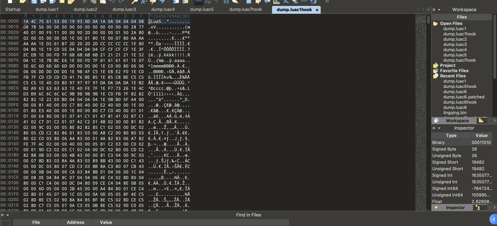
这个时候调用编译好的unluac，看一下
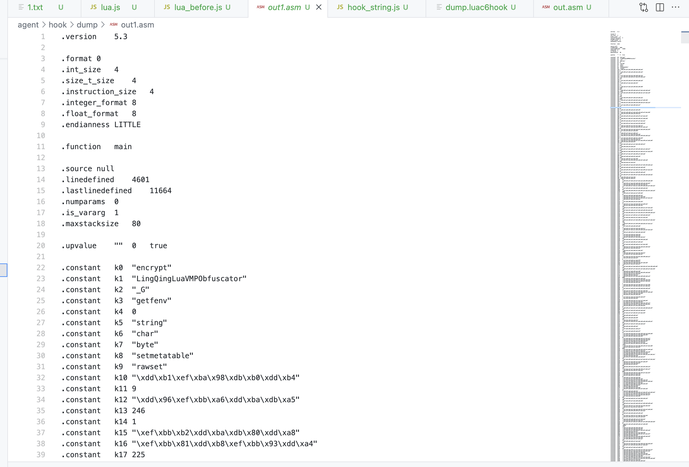
通过分析来看的话，6.lua的文件应该是字符串加密的解密器，直接hook一下lua_pushstring以及strncmp看一下大概的流程
var mInterval = setInterval(function () {
var mod = Process.findModuleByName("liblqd_lua.so")
var strncmp = mod.findExportByName("strncmp");
if (mod == null) {
console.log("无")
return
}
clearInterval(mInterval);
var addr = mod.base.add(0x12204)
console.log("hook addr: " + addr);
console.log(Instruction.parse(addr).toString());
Interceptor.attach(addr, {
onEnter: function (args) {
if(args[1].readCString().indexOf("_")!=0)
console.log(args[1].readCString())
}
})
//endline
Interceptor.attach(strncmp, {
onEnter: function (args) {
var s1 = args[0].readCString();
var s2 = args[1].readCString();
var n = args[2].toInt32();
console.log("strncmp called: " + s1 + " , " + s2 + " , " + n);
}
});
}, 1)
hook后可以看见一个关键的东西就是
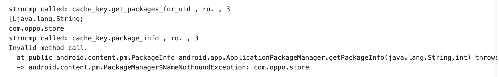
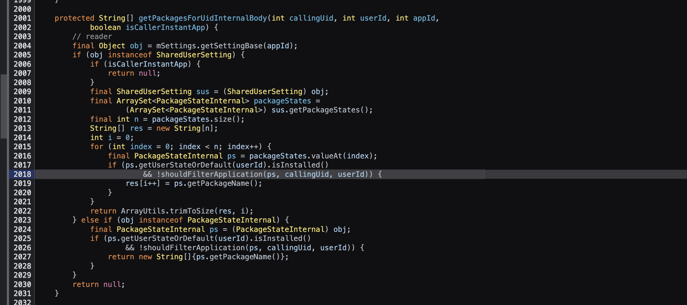
可以理解为通过uid来进行查询的，然后再通过GetPackageInfo来看是否存在来看是否有隐藏的app